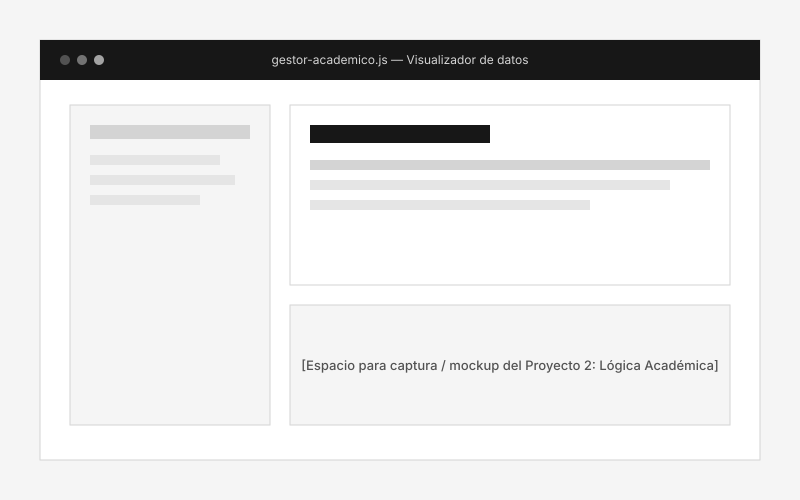
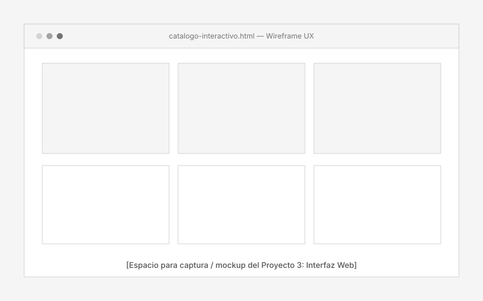

2.º
Año de Carrera Universitaria
Licenciatura en Sistemas de Información, iniciada en 2025 y actualmente en curso.
Estudiante de Sistemas | Interés en desarrollo de software e IA
Desarrollo asistido por inteligencia artificial Tecnología y resolución de problemas
Soy estudiante de segundo año de Licenciatura en Sistemas de Información. Me interesa el desarrollo de software, la inteligencia artificial y la tecnología. Utilizo herramientas de IA para investigar, desarrollar aplicaciones, evaluar código generado y resolver problemas técnicos. Continúo desarrollando mis habilidades mediante proyectos académicos y personales.
Indicadores académicos y de progreso técnico formativo. Valores provisionales sujetos a actualización.
Licenciatura en Sistemas de Información, iniciada en 2025 y actualmente en curso.
Investigación, evaluación de código generado y resolución de problemas técnicos.
Conocimientos de Git y GitHub.
Programación con Python y Java en el Instituto Superior Santo Domingo.
Formación académica complementaria en programación, herramientas de desarrollo utilizadas y competencias de desarrollo asistido por inteligencia artificial.
Prácticas de codificación asistida por modelos de inteligencia artificial, ingeniería de prompts y auditoría técnica de soluciones de software generadas.
Formación complementaria en fundamentos de programación, lógica y algoritmos utilizando Python y Java.
Herramientas utilizadas para desarrollar, gestionar versiones y prototipar interfaces.
Selección de trabajos académicos y personales. Incluye enlaces a repositorios y caso de estudio detallado.

Desarrollo integral de la estructura base para un portafolio personal con nueve secciones, navegación accesible por teclado y diseño adaptable.
Estructuración semántica sin frameworks, aplicación de pautas de accesibilidad web y diseño adaptable con prioridad para dispositivos móviles.

Aplicación web de práctica para la manipulación dinámica del DOM, validación de formularios y visualización estructurada de registros académicos sin librerías externas.
Manejo de eventos, persistencia en localStorage, modularización de funciones en JavaScript y validaciones de entrada.

Desarrollo de un catálogo interactivo de componentes visuales reutilizables, explorando el comportamiento responsivo en resoluciones móviles, tablets y monitores de escritorio.
Dominio de sistemas de cuadrícula flexible, jerarquía tipográfica visual y optimización de layout sin desbordamientos horizontales.
Línea cronológica formativa. La estructura contempla formación académica actual y espacios reservados para futura inserción laboral (no se inventa experiencia).
Carrera iniciada en 2025 y actualmente en curso. Interés en el desarrollo de software, la inteligencia artificial y la tecnología.
Instituto Superior Santo Domingo
Formación complementaria en fundamentos de programación, lógica, algoritmos y desarrollo utilizando Python y Java.
No se incluye experiencia profesional no confirmada.
Conocé mi contexto académico, vocación técnica y los principios con los que abordo cada desarrollo.
Soy estudiante de segundo año de la Licenciatura en Sistemas de Información, carrera que inicié en 2025. Me interesan el desarrollo de software, la inteligencia artificial y la tecnología. Mi fortaleza actual es dirigir herramientas de IA, elaborar instrucciones, analizar resultados, auditar código generado e identificar errores.
Utilizo herramientas de inteligencia artificial para investigar, desarrollar aplicaciones, evaluar código generado y resolver problemas técnicos. También tengo conocimientos de Git y GitHub, y formación complementaria en fundamentos de programación, lógica y algoritmos con Python y Java.
Mis principales áreas de interés son el desarrollo de software, la inteligencia artificial y las herramientas que apoyan la investigación y la resolución de problemas técnicos.
El código debe ser legible tanto para desarrolladores como para tecnologías asistivas. Priorizo siempre el uso de etiquetas HTML correctas y navegación por teclado natural.
Mantengo una actitud de investigación constante y autocrítica constructiva, aprendiendo de los errores para escribir soluciones más limpias, escalables y mantenibles.
Cada decisión técnica tiene un impacto en la persona que utiliza el sistema. Procuro que las interfaces sean predecibles, consistentes y sin fricciones innecesarias.
¿Te interesa mi perfil o querés conversar sobre proyectos académicos y oportunidades formativas? Ponete en contacto conmigo por cualquiera de estas vías.
Estoy disponible para responder consultas y participar en iniciativas de desarrollo de software.
* Maqueta demostrativa: El formulario cuenta con validación HTML5 nativa pero no requiere backend en esta etapa inicial.